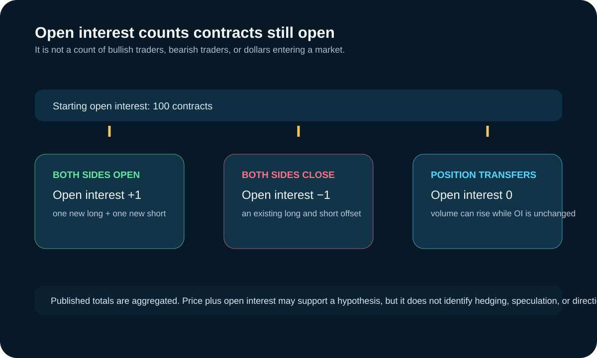

Futures Open Interest: Definition, Uses, and Limits
Updated September 19, 2026
Open interest is the number of futures contracts that remain open and have not been offset or fulfilled by delivery. Each contract has both a long and a short side, but the contract is counted once. Open interest is not a count of bullish traders, bearish traders, or dollars entering a market.

Open interest versus volume
| Measure | What it counts | What it does not establish |
|---|---|---|
| Volume | Contracts traded during a stated period | How many positions remain open afterward |
| Open interest | Contracts still open at the reporting point | Whether longs or shorts are “in control” |
How it changes
If both sides create a new contract, open interest increases by one. If both sides close an existing contract, it decreases by one. If an existing position is transferred to a new participant, volume can increase while open interest remains unchanged. Public data are aggregated, so a price-and-open-interest combination alone does not identify which participants opened, closed, hedged, or speculated.
Three contract-lifecycle examples
| What happens | Volume | Open interest | What remains unknown |
|---|---|---|---|
| A new long and new short create one contract. | Increases | Increases by one | Why either side took the position. |
| An existing long and existing short both offset. | Increases | Decreases by one | Whether the close was a hedge, profit-taking, or risk reduction. |
| An existing position changes hands. | Increases | Unchanged | Which participant type transferred the position and its motive. |
These are accounting examples, not a way to classify every published trade. Exchange totals are aggregated, while real activity can include outright positions, calendar spreads, intercommodity spreads, hedges, market making, and delivery-related activity.
Consider a small ledger. Beginning open interest is 1,000 contracts. If one newly opened long meets one newly opened short, the reported open interest becomes 1,001. If an existing long and existing short later offset one contract, it becomes 1,000. If a holder sells an existing long to a new holder while the other side remains open, volume rises but open interest can stay at 1,000. The numbers explain the accounting; they do not identify why anyone traded.
Contract-month selection and the roll
Open interest can help compare participation across contract months when choosing which listed contract to inspect. Use it with volume, bid-ask spread, depth, expiration calendar, and the broker or platform's symbol mapping. The contract with the largest open interest is not automatically the best execution venue for every moment or order size.
As expiration approaches, open interest may decline in one month and rise in a later month as participants roll exposure. That migration is not a directional signal. Products have different first-notice, last-trade, settlement, and liquidity conventions, so a fixed roll rule copied from another contract is unsafe.
For example, an analyst may see declining open interest in a nearby month and rising open interest in the next month. The useful first question is whether the timing matches the product's normal roll and whether volume, spread, and depth support the same active-contract choice. It is not enough to call the change bullish or bearish. A calendar spread, hedge adjustment, or ordinary expiration process can produce the same aggregate pattern.
Useful applications
- Compare activity across contract months when selecting the actively traded expiry.
- Monitor how participation migrates during a roll.
- Use alongside volume, spread, and depth rather than as a substitute for liquidity measurement.
- Frame a hypothesis about participation, then test it against contract-specific reports and other evidence.
Use cases and edge cases
A researcher might use open interest to document how participation is distributed across nearby contract months before choosing where to inspect liquidity. A risk manager might monitor whether a roll changes the reference contract used in a model. Those are descriptive uses. They differ from claiming that an increase proves a particular class of trader is committed to a bullish or bearish outcome.
Spread and hedge activity make that distinction especially important. A participant can open one leg and close another, and aggregate contract-month data will not reveal the full multi-leg purpose. Delivery periods, exchange-specific reporting conventions, options-related hedging, and corrections from preliminary to final reports add further reasons to avoid treating one daily change as a complete market narrative.
From observation to a limited interpretation
Start with the raw observation: for example, the next contract month gained open interest while the nearby month lost it over the same reporting interval. Next, compare volume, expiration timing, and execution conditions in both months. If the timing is consistent with the normal roll, the defensible interpretation may simply be that activity is migrating. If the data do not line up, the appropriate result is an unresolved question, not a story about a directional crowd.
Document what would change the conclusion. A corrected final report, an exchange notice, a different active contract, or evidence that the positions are part of a spread can all change the context. This discipline is useful because it separates an observation that can be checked from a motive that cannot be extracted from an aggregate number.
Why the classic trend matrix is only a heuristic
Rules such as “price up plus open interest up equals new bullish money” are interpretations, not identities. The same aggregate change can contain hedging, spread trading, market making, or position transfer. Open interest does not reveal motive, and it should not be used alone to predict direction.
A four-cell price-and-open-interest table can organize observations, but it cannot diagnose participant intent. It does not show whether activity came from an outright trade, a hedge, a spread, or an offsetting set of positions. Keep the conclusion narrow and seek contract-specific evidence before attaching a narrative.
Expiration and reporting caveats
Open interest often migrates from an expiring contract to a later month, but roll timing differs by product and participant. CME notes that preliminary daily reports can differ from the final Daily Bulletin. Verify the product's current volume and open-interest report, expiration rules, and broker handling rather than relying on a fixed calendar copied here.
Practical report check
- Confirm the exact product and contract month.
- Read volume and open interest as separate fields for the same reporting point.
- Check whether the report is preliminary or final.
- Compare nearby months during a roll instead of reading one month in isolation.
- Use a price/open-interest pattern as a hypothesis to investigate, not as an instruction to buy or sell.
Preserve the date and version of the report in any analysis. CME's preliminary daily figure can differ from its official Daily Bulletin. A chart that silently mixes final and preliminary numbers, nearby months, or different reporting times can create an apparent signal that is only a data-handling error. Open interest is most useful when the contract, reporting status, and comparison basis are explicit.
Sources, scope, and change risk
Reviewed September 19, 2026 against the following first-party or regulatory sources:
Open-interest publication timing, preliminary status, contract conventions, expiration, and roll behavior vary by exchange and product. Check current official reports and contract rules. Interpretive examples do not identify participant motive or predict price direction.